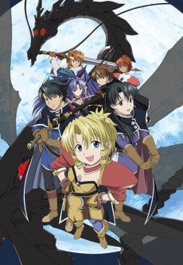
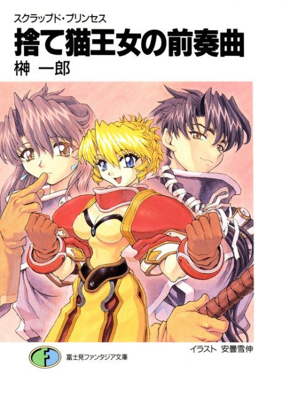
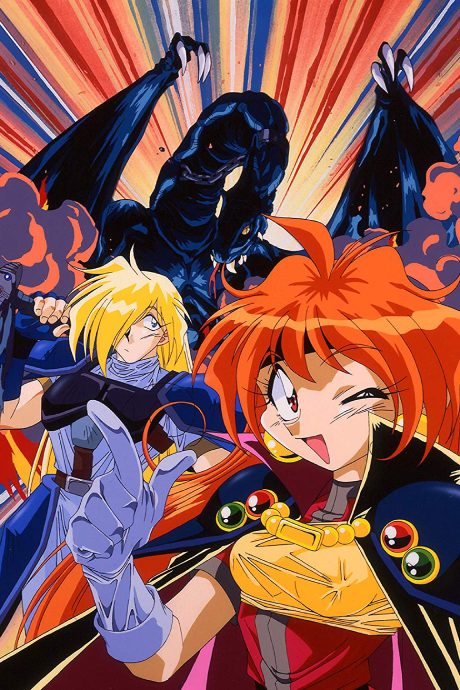
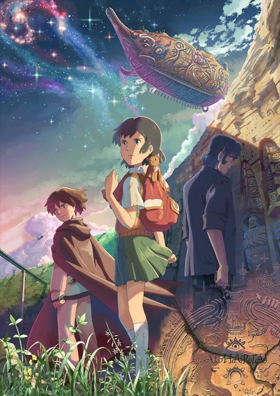
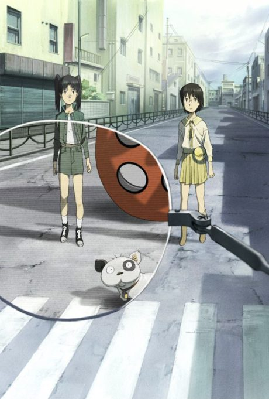
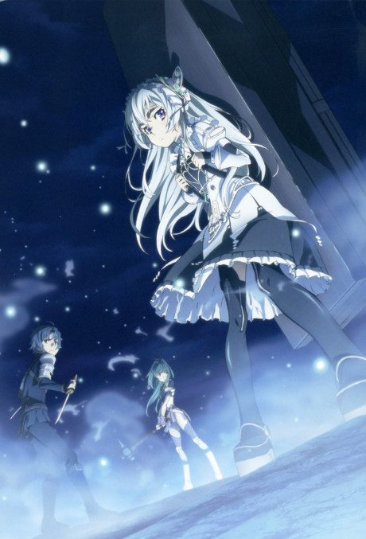

Scrapped Princess
スクラップド・プリンセス
Pacifica, a girl prophesied to destroy the world, is protected by her adoptive siblings as she flees from those trying to kill her.
The anime covers the whole light novel.
7.1AniList score
—Animeter, no votes yet
24episodes
Rate it or report where you stopped
Anime finished. Where does the story go next?
StatusFully adapted
Listed as a complete light novel adaptation; the anime tells the whole story.
More like Scrapped Princess
 Manga Ch. 819.1
Manga Ch. 819.1
 Manga Vol. 57.3
Manga Vol. 57.3
 Film8.6
Film8.6

Manga Vol. 97.4 Film8.4
Film8.4
 Film8.5
Film8.5
 Film8.5
Film8.5

Film7.1 Manga Ch. 248.5
Manga Ch. 248.5

Original7.7
Unclear6.9 Unclear7.2
Unclear7.2